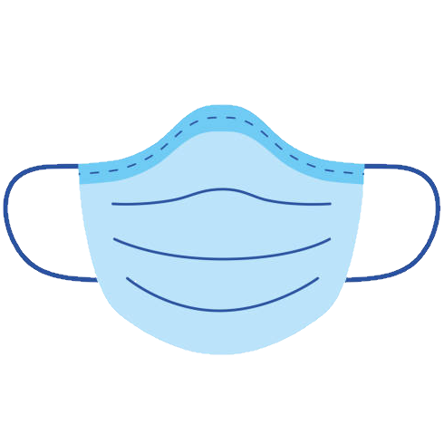

Hi, I'm Dinesh!
EECS @ UC Berkeley | Google CSSI '21
I'm a student at UC Berkeley studying Electrical Engineering and Computer Science (EECS). I have experience working in software development roles at various tech companies, so feel free to reach out if you're interested!
Projects

MaskOn
An IOS application that aims to help businesses by reducing the need for having employees monitor customers who enter a store by automatically checking if they are wearing a mask.
- Swift
- PyTorch
- iOS
- Machine Learning
Skills
- Python
- Java
- iOS
- PyTorch
- Web
Python

I have significant experience working in Python both from university classes and personal projects.
Relevant experience:
CS 61A - Structure and Interpretation of Computer Programs in Python (A)